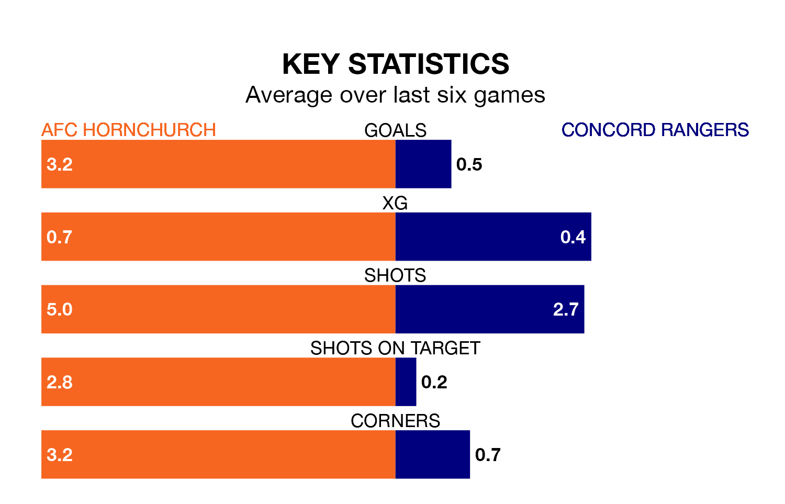

Relegation candidates Concord Rangers face a challenge away against high-flying AFC Hornchurch at the Hornchurch Stadium on Tuesday.
Concord Rangers are 21st in the Isthmian Premier Division table, and have picked up five wins and six draws in their 31 games to date.
Hornchurch, meanwhile, are top of the standings with 82 points, having won 25 and drawn seven of their first 33 matches.
Hornchurch are in exceptional form in the Isthmian Premier Division, with six wins and no losses from their last six games.
With no wins and six losses over that period, Concord's form is much worse – they have taken no points from 18, compared to the hosts' 18.
With 84 goals in 33 games so far this season, Hornchurch are the league's highest scorers with 2.5 goals per game. And they are conceding fewer than average, letting in 25 goals at a rate of 0.8 per game.
Rangers, meanwhile, are below average scorers, with 0.9 goals per game, compared to a league average of 1.6. They have conceded 1.9 goals per game.
Hornchurch's last match was on Saturday, a 4-0 win against Whitehawk.
Concord lost 2-1 against Lewes last time out, also on Saturday.
Updated: 12:39 (UTC), 26/03/24